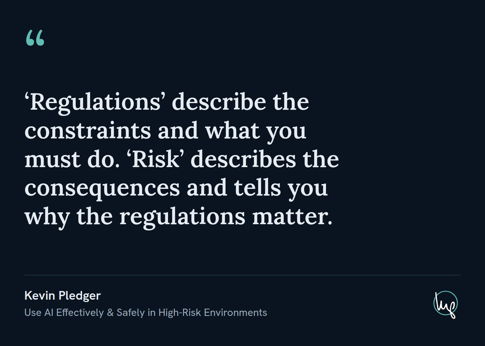

A layer-3 consumer format at 7:5. One quote, one attribution, one badge. The reference implementation doubles as the working template.

| Canvas | 1400×1000, exactly 7:5 (§0.1). Exports JPG q92. |
| Register | Dark (§3). |
| Tier | Word-count tiers set the quote size. t-xl is 20 words (§2.2). |
| Type floors | Derived from the 1400px canvas width, not copied from the infographic's 1080 ladder. Name 36px, context sentence 30px. |
| Opening mark | Lora at 150px in --accent — the one place brand color
enters an otherwise monochrome card. The quote itself carries no quotation marks. |
| Badge | logo_short_ring_inv_teal.svg, 104px tall, bottom right (§4). |
| Typesetting | text-wrap: pretty, hyphens: none. Never
hyphenate, never justify (§3.3). |
logo_short_ring_inv_teal.svg is a one-attribute derivative of
logo_short_ring_inv.svg. Never place a _ring file at the
#0026FF it ships with.
Authority: docs/quote-post-design-system.md. Template:
examples/self-quote/ — copy the directory, swap the two REPLACE ME
blocks, set the tier class, re-render.